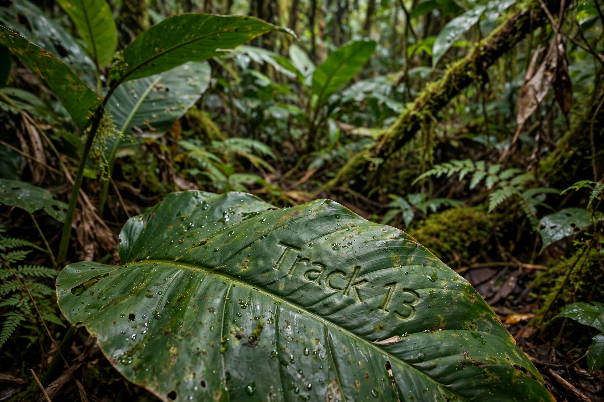

The Daily Chronicle
In a session lasting nearly four hours, the city council voted narrowly to allocate $2.3 million for the renovation of Riverside Park. The plan includes new walking trails, updated playground equipment, and expanded parking facilities.
"This is a win for families," said Council Member Alvarez. "Our parks have been neglected for too long." Opponents argued the funds should go toward road repairs instead.
The parks department expects construction to begin in early spring. Residents can submit feedback through the city's website until November 30.

Meanwhile, the annual Harvest Festival drew record crowds downtown last weekend, with vendors reporting strong sales across all categories.
Discover Music History
Scan to explore the legends
Weather: Partly cloudy, high 72°F. Chance of rain 20%.
Sports: Local high school football team advances to regional finals after 28-14 victory.